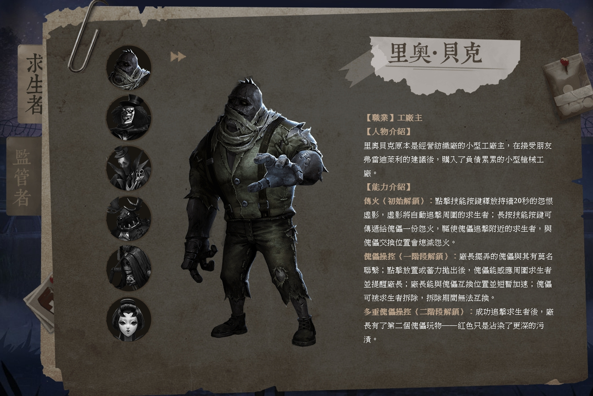
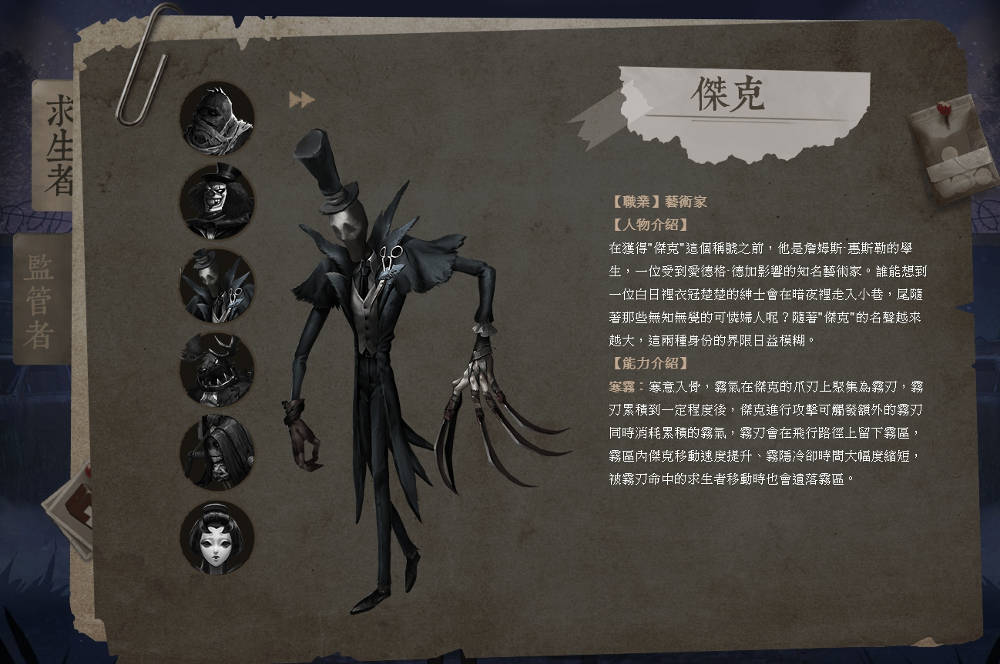
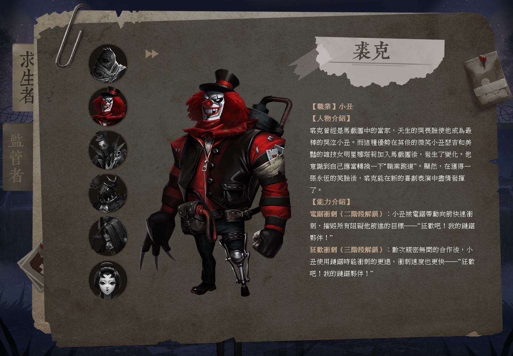
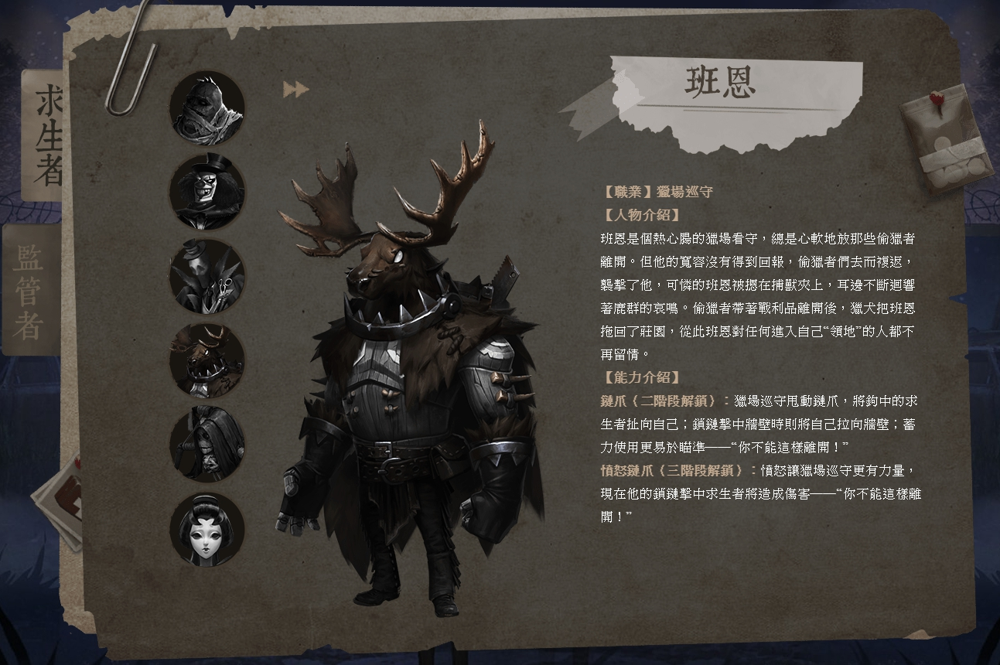
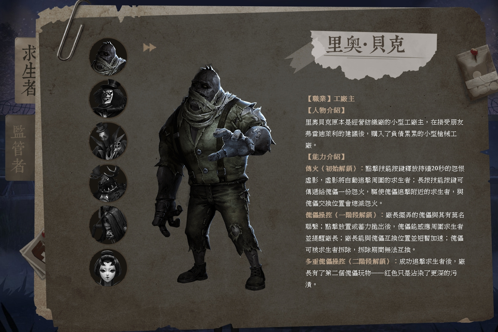
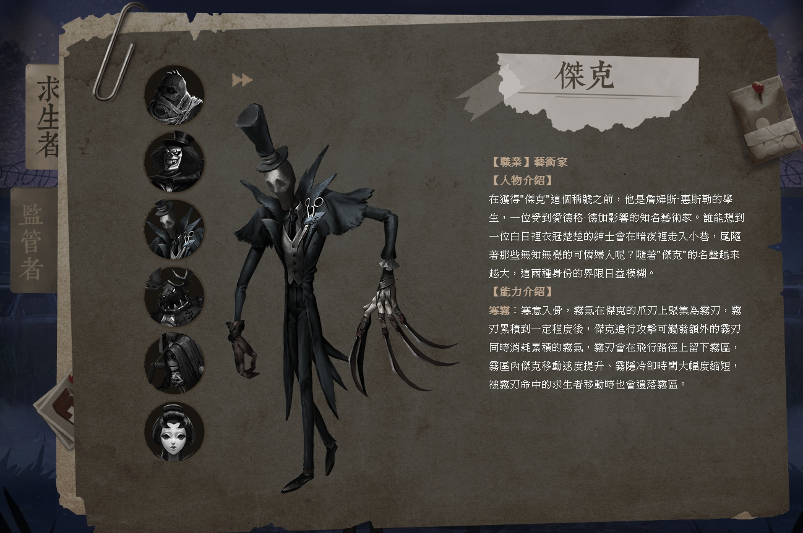
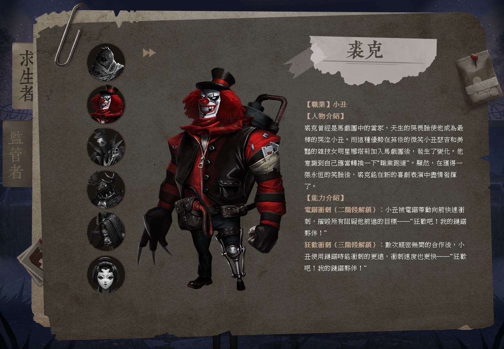
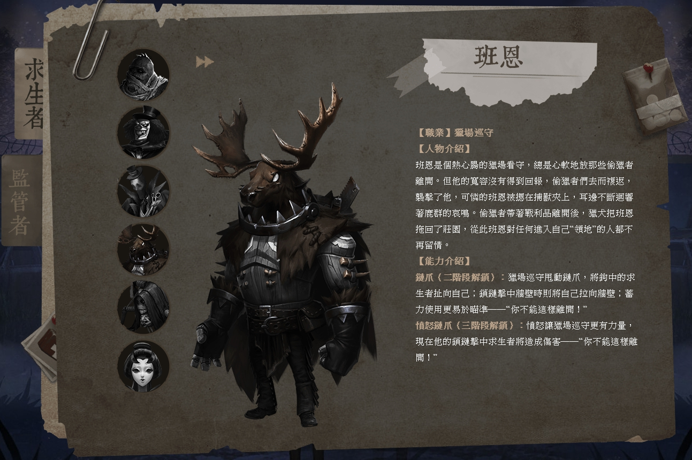

監管者
廠長
 是園丁的父親 帶有兩隻傀儡娃娃 在前陣子改版完後 娃娃可以開始到處亂走去打人啦
傑克
 似乎是以開膛手傑克為原形 具有霧刃及隱形的技能 早期有特殊道具能讓傑克公主抱 但目前道具已絕版
小丑
 手持火箭筒衝來衝去 移動速度極快 只要被追擊到就很難跑掉
鹿頭
 曾經是我最喜歡用的監管者 長長的鍊子可以將人隔窗、隔板就拉過來 對於前期不太會追擊的人來說應該還算是不錯用 只不過現在越來越少出現了
 是園丁的父親 帶有兩隻傀儡娃娃 在前陣子改版完後 娃娃可以開始到處亂走去打人啦
 似乎是以開膛手傑克為原形 具有霧刃及隱形的技能 早期有特殊道具能讓傑克公主抱 但目前道具已絕版
 手持火箭筒衝來衝去 移動速度極快 只要被追擊到就很難跑掉
 曾經是我最喜歡用的監管者 長長的鍊子可以將人隔窗、隔板就拉過來 對於前期不太會追擊的人來說應該還算是不錯用 只不過現在越來越少出現了